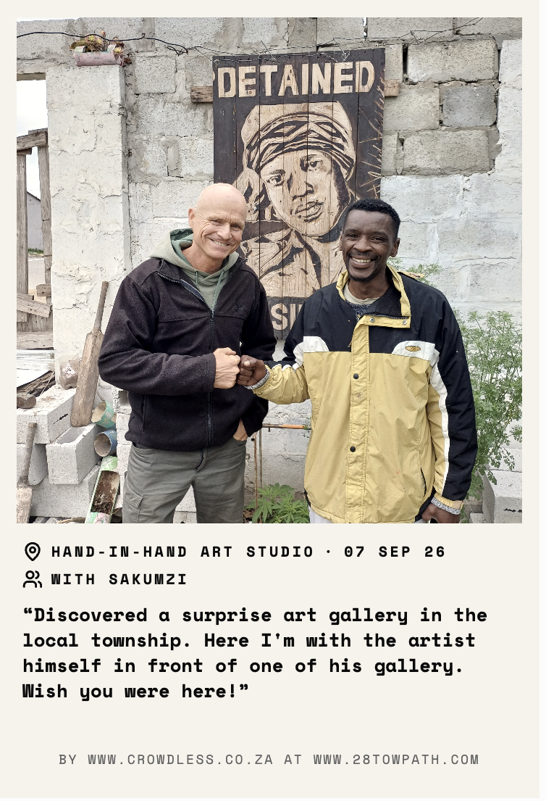

How do you market a tourism company without a marketing team?
COVID didn't just disrupt tourism. For small hospitality businesses, it wiped out years of momentum. This business already had a compelling story: responsible travel, accommodation, tours and a food forest. But its owner didn't like social media.
So instead of asking, "How do we get the owner to post more?" or "How do we get more followers?", I asked: "How might we turn the experience itself into a marketing opportunity?"
The innovation journey
From manual social media posting to a prototype that puts the customer at the centre of the marketing loop.
start with empathy
I began with the existing process to deeply understand the user experience by photographing experiences and sharing the images with friends.
The goal was to understand the busines, the product and the customer experience, and identify opportunities for someone creating social content.
reframe the problem
The problem wasn't a lack of things worth sharing. It was a mismatch between the traditional marketing model and the behaviour of international travellers.
Social media marketing relies on building followers, but someone travelling internationally may visit a destination once in their lifetime. The opportunity wasn't to convince them to follow the business forever, but to give them a memorable way to share their experience with friends and family back home.
prototype
I used Lovable to build a fully functional digital postcard maker that also functioned as a business card. Guests could turn photographs into branded postcards they could share with friends and family.
test and learn
I tested the prototype with staff first, who were mobile first users not familiar or comfortable with technology on devices that had limited resources.
When they were surprised at how easy it was to create postcards, I tested the concept with a real tour group.
Traditional social media marketing primarily measures success by the number of followers a business can attract. But for a small tourism business, the people who follow them on social media are not necessarily the people who will book an experience.
The problem was reframed to focus on the people who had already booked an experience, and how they could be turned into marketers for the business without requiring them to download another app or feel that they have to do work.
The solution: a digital postcard maker
After a tour or activity, guests could receive photographs of their experience and turn them into personalised digital postcards simply by scanning a QR code that routed them to a progressive web app.
Every postcard carried the company's branding. Guests could share their memories with people back home through WhatsApp or social media, while a simple WhatsApp pathway made it possible to reconnect with the business owner.
Why this was different
Traditional digital marketing would have required the owner to consistently create content, write captions, chase follower counts and maintain social channels.
This concept moved the marketing moment into the customer experience itself. The customer gets something useful and fun without needing to follow or post on social media: a personalised memory to share. The business gets a branded touchpoint that can travel beyond the original experience.
The technology isn't the strategy. It is the mechanism that makes the strategy easy to execute.
The marketing loop
Experience → Photograph → Postcard → Share → Remember → Reconnect → Book
"Don't make the business become something it isn't. Design the technology around the business it already is."
- Innovation principle
The postcard in the wild
The prototype turned ordinary tour photographs into something guests could keep and share. These are examples of the branded postcards created through the experiment.
The important bit wasn't the postcard itself. It was the behaviour it enabled: a guest could take a memory home, share it with someone else, and have a simple route back to the business.
Try the postcard app
Try the working prototype
This wasn't a mock-up. I built a functioning version of the postcard maker with Lovable, ready for a guest to take or upload a photo, add the experience details and share the result.
Open Postcard StudioOpens the live prototype in a new tab.
Start with the human problem
The starting point wasn't "we need an app." It was a very human constraint: the person running the business didn't enjoy social media.
That changed the design question. Instead of trying to fix the person, I looked for a way to remove the behaviour that was getting in the way.
Prototype before perfecting
Using AI-assisted development, I could turn the idea into a working prototype quickly. That made it possible to test the experience with real people before investing heavily in building it out.
Test with the least confident user
Testing with staff first deliberately challenged the assumption that the technology would be easy enough for everyone.
A staff member who was nervous about technology was able to create postcards successfully. That gave us useful evidence that the interaction could be simple enough without technical expertise.
Test behaviour, not enthusiasm
The next step was to put the concept in front of actual tourists. Instead of asking whether people thought it was a good idea, the experiment created an opportunity to observe whether they would actually use and share it.
From a poster to a postcard
I also created a physical poster with a QR code, giving guests a simple bridge from the physical tourism experience into the digital one.
Scan the code and the guest lands directly in the postcard maker, turning the physical experience into a digital one in a single step.
See where the QR code leadsWhat this project demonstrates
Innovation isn't necessarily about inventing complicated technology. It can be about seeing a familiar problem differently and designing a simpler system around it.
This project brought together customer empathy, marketing strategy, rapid prototyping, AI-assisted development, usability testing and experimentation.
The result was a working proof of concept for a new kind of customer-generated marketing channel: one where the guest's own desire to remember and share their experience becomes part of the business's marketing system.
"Sometimes the smartest marketing channel is already standing inside your business — having a great experience."
Have a problem worth experimenting with?
Let's turn it into something people can actually use.
Start the conversationLet's play!
Have an idea, problem or experiment you'd like to explore?